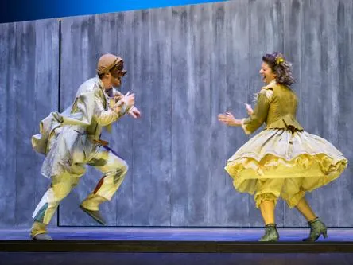

ven 6 nov
Arlecchino muto per spavento
VENERDì 6 NOVEMBRE ORE 21:00 - Auditorium Vivaldi di Cassola
 Indicazioni
Indicazioni
- Costi e prenotazioni
- Costo non indicato · Prenotazione non indicata
- Programma
- Programma da verificare. Apri la fonte ufficiale per orari e possibili aggiornamenti.
- In caso di maltempo
- Nessuna indicazione specifica pubblicata.
- Note
- Acquisito automaticamente dalla fonte.
L’EVENTO
Descrizione completa
VENERDì 6 NOVEMBRE ORE 21:00 - Auditorium Vivaldi di Cassola
Arlecchino muto per spavento - Stivalaccio Teatro
soggetto originale e regia Marco Zoppello
Uno dei canovacci più rappresentati nella Parigi dei primi del ‘700, qui riproposto per la prima volta in epoca moderna,
rappresenta un grande omaggio alla
e all’abilità tutta italiana del fare di necessità virtù.
Lo spettacolo è ambientato nel 1716: Arlecchino, per non far scoprire a Lelio i suoi segreti, viene spaventato con la storia di un demonio e decide di diventare muto. Tra amori, equivoci, litigi e gag, lo spettacolo celebra la Commedia dell’Arte italiana, unendo tradizione, improvvisazione e teatro moderno.
Evento organizzato da Fondazione Aida in collaborazione con il Comune di Cassola
intero € 14,00; ridotto € 12,00
https://www.webtic.it/app/shopping/loadLocal/VI/5389
www.fondazioneaida.it - 0424 530298 - 347 8226461- 045 8001471/int. 1 auditoriumvivaldi@fondazioneaida.it .
La biglietteria del teatro è aperta il mercoledì pomeriggio dalle 16.30 alle 18.30
3478226461 - auditoriumvivaldi@fondazioneaida.it
IL PROGRAMMA
Programma e orari
Appuntamenti raccolti dalle fonti elencate. Dove manca un orario, non è ancora disponibile in questa scheda.
Programma pubblicato
- Dal 2026-11-06 al 2026-11-06
INFORMAZIONI UTILI
Prima di partire
- Controllare la fonte prima di partire.
ORGANIZZAZIONE